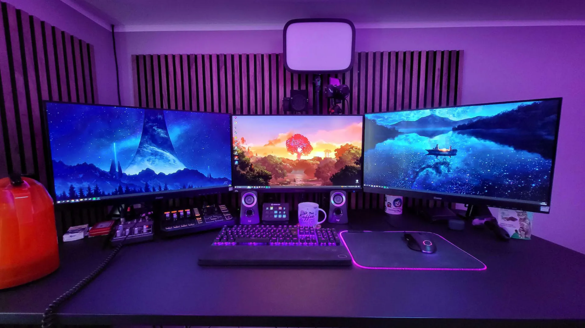

<ion-content>
  <section class="container">
    <div class="slider-wrapper">
      <div class="slider" #slider>
        <video id="slide-1" autoplay muted loop>
          <source src="../../assets/images/video.mp4" type="video/mp4">
          Tu navegador no soporta la etiqueta de video.
          <track label="English" kind="captions" srclang="en" src="resources/myvideo-en.vtt" default>
          <track label="Deutsch" kind="captions" srclang="de" src="resources/myvideo-de.vtt">
          <track label="Español" kind="captions" srclang="es" src="resources/myvideo-es.vtt">
        </video>
        
        
        
      </div>
      <div class="slider-nav">
        <a (click)="navigateToSlide(0)"></a>
        <a (click)="navigateToSlide(1)"></a>
        <a (click)="navigateToSlide(2)"></a>
        <a (click)="navigateToSlide(3)"></a>
      </div>
    </div>
  </section>
  
  <div class="section2">
    <h1>Sección 2</h1>
   
  </div>

  <div class="section3">
    <h1>Sección 3</h1>
    <p>Contenido de la sección 3.</p>
  </div>
  
  <div class="section4">
    <h1>Sección 4</h1>
    <p>Contenido de la sección 4.</p>
  </div>
  <app-footer></app-footer>
</ion-content>
